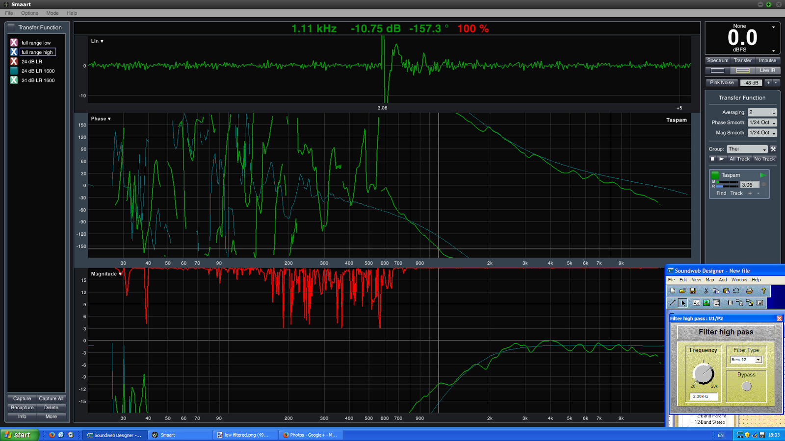

Now we did acquire some dual FFT measurement tool and we did get some practice in measuring. So it's time to dive into actual system tuning.First we have to establish some design goals:I think there will be no doubt that, at first instance, we will go for a flat magnitude response. Sure, certainly in live audio there is a big preference for sloped responses. Be it a smiley curve or more seriously a sloped curve towards the sub end. (upwards that is ;) But imho this is part of a sound engineers 'artistic' input in a same way as EQ-ing a system to his/her preference is. Other people (with whom I don't always agree :) have called this toning (as opposed to tuning) a system.A bit more complicated design goal will be to try to achieve an even controlled response off axis as well. Why? Not only will there be (paying?) people listening off axis; anywhere you listen to music, in enclosed spaces, there will be acoustics. So also sound radiated off axis will (at a certain point) reach your (on axis being) ears.One way to achieve this is by using the well known Linkwitz-Riley X-over tuning. Acoustically that is! So if we would be applying a 24dB LR x-over in the electrical domain doesn't this necessarily give us an acoustic LR behaviour!A simple trick to see what a desired 24 dB filter would look like in your measurement. Just connect the output of your X-over to the measurement input, select a desired X-over trace and presto:

Here you have it, 1600 Hz /24 dB X-over LR style as a target trace. Don't get confused by the out of band nonsense, no coherence there so no viable measurement data. (actually should have faded this, now where's that button in Smaart, hmm)Now let see if we can take that measurement from that previous 12' horn loaded cabinet and see if we can give it a LR alignment.

Seems reasonable, hein? Now look closely and you will notice in the bottom corner the soundweb setting: 2800Hz / 12 dB bessel! Didn't expect that to work out for an acoustic filter of 1600Hz / 24dB?We can now continu to see if the 1' driver horn will combine in the same way. Remember I am measuring everything with music so at the same time I am listening if it sounds anywhere near ok.


Again if you try to read the small figures: 2300Hz / 12 dB Bessel! From the days I still had to do these things by ear I have a real preference for Bessel filters, 25 years later this finally seems to make sense ;) (actually I am going to set up this cab with 18 db Bessels but these are not implemented in SW9088)Final picture?

Microphone is now further away so this is why things start to get more bumpie again. (for educational purposes unfortunately also in the X-region, no, no, this not a x-over artefact ;)Are we finished now? No, but this is a start. We can now start to compare this with different solutions.Am I anywhere cheating here? No, but I' am not telling you the whole story (see, this is my business, remember ;) There is a lot more to be said about adjusting delay, applying EQ at the right places etc etc You can read in between the lines though...